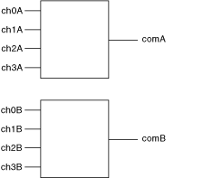

The following figure represents the NI PXI-2546 in the dual 4×1 multiplexer topology.
|  |
Call the niSwitch Connect Channels VI or the niSwitch_Connect function to connect channels in this topology. If applicable, you must call the niSwitch Disconnect Channels VI or the niSwitch_Disconnect function to disconnect an existing connection before you call the niSwitch Connect Channels VI or the niSwitch_Connect function.
|
Note The niSwitch Disconnect Channels VI or the niSwitch_Disconnect function does not operate the relay until the next niSwitch Connect Channels VI or the next niSwitch_Connect function is executed. Thus, one channel of each of the 4x1 multiplexers is always connected to the common channel. If you have reset the module or called the niSwitch Disconnect All Channels VI or the niSwitch_DisconnectAll function, you do not need to disconnect the default channel (ch0) from COM upon initial connection. |
The following sequence of tasks illustrates the VI/function calls necessary to make consecutive connections—one between CH 1A and COM A and the other between CH 2B and COM B:
When scanning the NI PXI-2546, a typical scan list entry might be ch1A->comA;. This entry routes the signal connected to CH 1A to COM A.